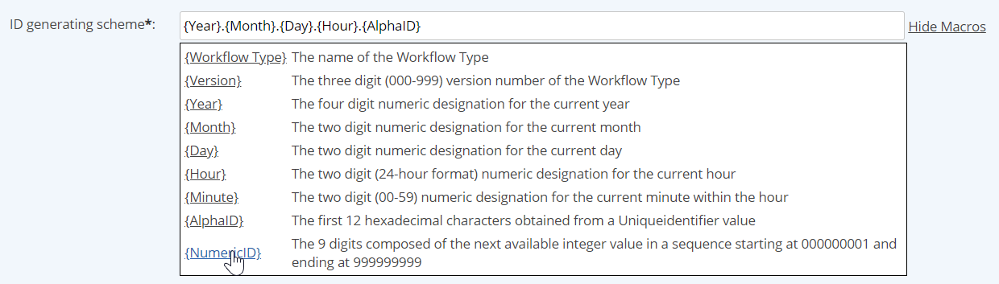

The Workflow ID generating scheme defines the format for automatically generating the unique ID for workflow instances. This format may use any combination of the following macros.
{Workflow Type} Name of the workflow type
{Version} Version number of the Workflow Type (000-999)
{Year} Four-digit number for the current year
{Month} Two-digit number for the current month
{Day} Two-digit number for the current day
{Hour} Two-digit number for the current hour, in 24-hour format
{Minute} Two-digit (00-59) number for the current minute within the hour
{AlphaID} First 12 hexadecimal characters obtained from a Unique identifier value
{Numeric ID} The 9 digits composed of the next available integer value in a sequence starting at 000000001 and ending at 999999999
{Task Name} Name of workflow related task(possibly also due date?]
The character limit for an ID generating scheme is 60 characters. If you use the workflow type name in the scheme, you will need to limit the length of the type name accordingly.
To edit the ID generating scheme:
When you are finished inserting macros, click Hide Macros.
